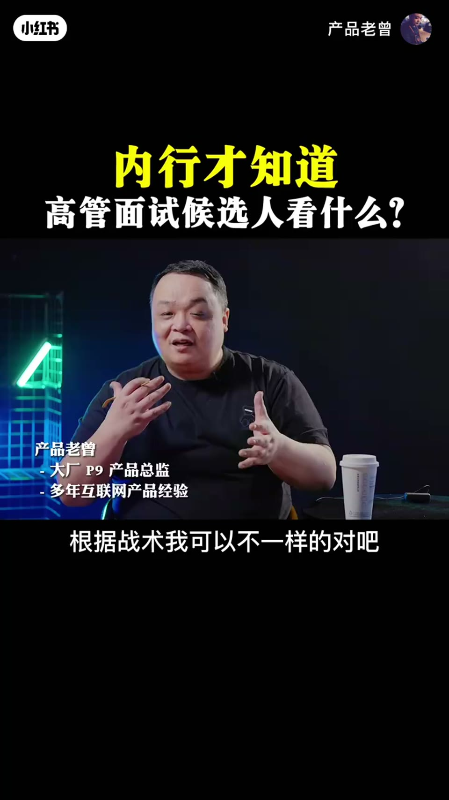

内容要点
一支 4 分半的高阶面试课：站在面试官视角拆解「最后一轮管理面试」到底考什么——不再是专业问题，而是组织设计。核心关注点包括：像排兵布阵一样把人放在不同位置、看能力的互补性（一加一大于二）、测试行业与市场洞察力、以及区分「熟练」与「可平移的思考抽象能力」。
知识结构
前几轮已把背景和专业能力摸得差不多，最后一轮在意的是你在我的组织下怎么排兵布阵。
团队管理其实是组织设计——不同性格（冲打型/守稳型）放不同位置，看合作面、融入面、配合面能否一加一大于二。
你能力很强，但我已有同质能力强的人，需要别的面的东西——没有互补性，你只是备选。
问行业性、市场方向性——砍柴再熟练能上战场吗？能力能否在换场景时复用。
不是熟练的结果，而是在不断训练中还有思考、抽象和可平移的能力——组织变革时需要这种可塑的人。
高阶管理面试面的是组织设计思维：把人放对位置、看互补性、测洞察力、找可平移的能力——不是专业熟练度。
00:00-01:20组织设计：排兵布阵
「如果你有这种能力，对我来讲就 surprise 了，我捡到宝了。我理解你其实就是可能会面到一些高阶的人员，因为前面的几轮面试已经把你的一些背景、一些专业能力差不多的摸得稀巴烂了，然后才会到他们面前。」
「我们一般来讲也不会问太多专业问题了，我们更多在意的其实是你在我的组织下——因为我们在做的叫做团队管理，其实是叫组织设计。我们在设计一个组织的框架和结构，有点像军队里面排兵布阵的感觉。然后我们这一块放哪些人比较好，这些人的秉性，比如说他是冲打比较强，还是守稳强，这些东西上我们会有一些看法。那不同的人要放在不同位置，合作面怎么样、融入面怎么样、配合面怎么样，是不是能发挥一加一大于二，这个结果、能力、秉性、侧重点上有没有互补性，我们都要看。」
01:20-02:10互补性决定你是主力还是备选
「有时候你能力是强，但是我已经有个跟你差不多能力强的了，我需要一些别的面的东西，你又没有，就变成可能你只是个备选了。所以这个是第一个比较大的问题。」
02:10-03:30洞察力：换一个场景，能力能复用吗
「下一个问题，就是想听听你对我讲的那个东西的认知和理解，比如说行业性的、市场方向性的，我会稍微的问你几句，看看你有没有那方面的秉性，就是对事情的洞察能力。」
「因为很多人他专业，是在一个重复训练和重复加深的过程中，不断地练习了一个技术。比如说我砍柴，每天都砍，手能伸脚儿，以后我不用看那个木头，我只要一削就能把它砍动。但是问题是你砍柴特别牛逼，你能上战场吗？这个难度就比较大。我要把你换到另外一个场景下也是挥刀的话，你能挥刀好吗？不一定，它不一定能复用。」

03:30-04:20可平移的综合能力
「所以我更希望看到的是，他的能力不是一种只是熟练带来的结果，他的能力是在不断的训练的情况下，自己还有思考和抽象，以及可以平移，它是一个综合面的素质。而这种素质是我们看中的。」
「为什么我们喜欢这种人？当我的组织需要变革的时候，就像你打篮球，你这个阵型上多少个前锋、多少个后卫、多少个中锋，根据战术可以不一样的。但是如果……」
完整转录（168段）
以下文本由 Whisper medium 模型自动转录，可能存在少量识别误差，已尽可能修正。
如果你有这种能力
对我来讲就surprise了
我捡到宝了
我理解你其实就是
中面可能会面到一些高阶的人员
因为前面的几轮面试
已经把你的一些背景
一些专业能力
差不多的摸得稀巴巴了
然后才会到他们面前
我们一般来讲
也不会问太多专业问题了
我们更多在意的其实是
你在我的组织下
因为我们在做的是叫做团队管理
其实是叫组织设计
我们在设计一个组织的框架
和结构
有点像那个军队里面
那个排兵布阵的感觉
然后我们这一块放哪些人比较好
这些放的人比较好
这些人的秉负
比如说他是冲打这种强
还是守稳强
这些东西上我们会有一些看法
那不同的人要放在不同位置
合作面怎么样
融入面怎么样
配合面怎么样
是不是能发挥一加一大约二
这个结果能力秉负测众上
有没有互补性
我们都要看这个
有时候你能力是强
但是我已经有个跟你差不多能力强的了
我需要一些别的面的东西
你又没有
就变成可能你只是个备选了
所以这个是第一个比较大的问题
下一个问题
就是想听听你对我讲的那个东西的认知和理解
比如说行业性的
比如说市场的方向性的
我会稍微的问你几句
看看你有没有那方面的秉负
就是对事情的洞察能力
因为很多人他专业
他是在一个重复训练和重复加深的过程中
不断的练习了一个技术
比如说我砍柴
每天都砍
手能伸脚耳
以后我不用看那个木头
我只要一削就能把它砍动
但是问题是你砍柴特别牛逼
你能上战场吗
就这个难度比较大
我要把你换到另外一个场景下
也是挥刀的话
你能挥刀好吗
不一定
它不一定能复用
所以我更希望看到的是说
好像他的能力不是一种只是熟练带来的结果
他的能力是在不断的训练的情况下
自己还有思考和一个抽象
以及可以平移
它是一个综合面的数字
而这种数字是我们看中的
为什么我们喜欢这种人
当我的组织需要辩证的时候
就像你打篮球是吧
你这个阵型上多少个前锋
多少个后卫
多少个中锋
根据战术可以不一样的
但是如果有一个人
他既能打前锋
也能打后卫
甚至有时候能客串一下中锋
屌不屌
那在我的阵型里面是多面手
他用处更广
当然很难有这种人
所以我只希望你说打中锋和打大前锋的时候
都可以打
那对我来讲我辩证更容易
所以你这个人
如果能把你的能力和东西
思考和平移到其他地方
对我来讲我的阵型更好弄
这是第一
第二
你有思考
说明你比起那帮只是熟练功的人
要强太多了
我们不是不招熟练功
熟练功对公司也很重要
如果我只是做这一个行业
做这一个事儿的话
但是如果你有这种能力
对我来讲就surprise了
我捡到宝了
所以你如果有这个跟没那个
刚好有两个人在竞争的话
我肯定要这个有的
成本差不多
但是性价比不同
对不对
然后第三个我会审视什么呢
也是从组织角度考虑的
发展性和稳定性
稳定性就是说
我们好不容易花了很多精力
又把我的时间付出了
我们招来的这个人
能不能够长期的在我们团队发展
长期发展有两个
一个是他自己的稳定性
比如说他住的远啊
住的近啊
你能不能在这个团队里
踏踏实实的干两三天
我这个我们也很关心
我们布完局以后
我不希望中间的兵自己就跑了嘛
然后第二个呢
是从公司角度
对他造成的稳定性
比如说我们现在这个岗位
本身稳不稳
这个人进来以后
他能不能适应变化
或者是我们承诺他的一些东西
如果发生变化
他会怎么应对
我肯定会问他一些问题
我说你之前的公司里面
万一如果有一些工作调整了
你会怎么解决
其实这个问题就试探他嘛
就看他接不接受被调整
改变一些他的工作发展的内容
如果他比较宽
他本身那个能力上
也确实能够复用
方法论形成了
所以让他换一个方向
他自己也没问题
这种人就好用
那如果说他不行
我来这就是为了做这个事儿的
那你们如果不让我做这个事儿
我就不来了
如果是这种人呢
我们就要看情况了
如果我保证不了这种人
我也不要了
为什么
我满足不了你的期望
职场就是一个互相选择
我满足不了你的期望
是我的问题
所以我就不要了
其实所有的东西
都是在组织思想
和这个团队思想上的